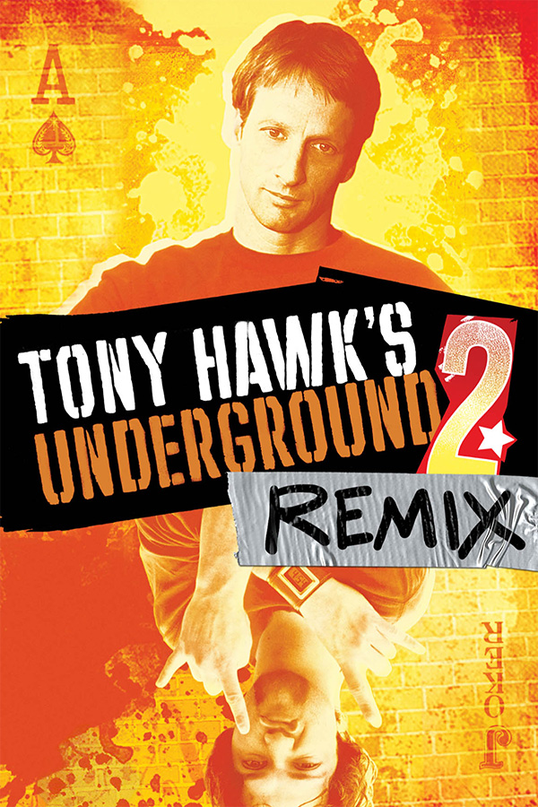

|  | |
| Playtime | Not Played |
| Last Activity | Never |
| Added | 4/29/2025 5:00:18 |
| Modified | 4/29/2025 8:36:57 |
| Completion Status | Not Played |
| Library | Playnite |
| Source | |
| Platform | Sony PlayStation Portable |
| Release Date | 3/24/2005 |
| Community Score | |
| Critic Score | 84 |
| User Score | |
| Genre | Sports |
| Developer | Neversoft Shaba Games |
| Publisher | Activision |
| Feature | Multiplayer Single Player |
| Links | Wikipedia MobyGames |
| Tag | |
Tony Hawk's Underground 2: Remix is a skateboarding video game in the Tony Hawk's series. The game, developed by Neversoft and Shaba Games and published by Activision, was released on March 24, 2005, as a launch title for the PlayStation Portable. Primarily a port of its console counterpart, the game featured a different progression, with four exclusive levels (Santa Cruz, Atlanta, Kyoto and Las Vegas), exclusive characters, and new cutscenes. "Create-a-Park" was notably absent in the game, with some graphics and other aspects toned-down from the console version.
The gameplay in Tony Hawk's Underground 2: Remix is similar to that of previous Tony Hawk games: the player skates around in a 3D environment modeled after various cities and attempts to complete various goals. Most goals involve skating on or over various objects or performing combos. Scores are calculated by adding the sum of the point value of each trick strung together in a combo and then multiplying by the number of tricks in the combo.
Many levels return from previous games, including an expanded warehouse (which also serves as the Story Mode's training area), School and Downhill Jam from Tony Hawk's Pro Skater, Canada, Los Angeles and Airport from Tony Hawk's Pro Skater 3, and Philadelphia from Tony Hawk's Pro Skater 2. Classic mode, which was featured in Underground 2, was included in Remix. The game features four-player wireless play.
Three of the exclusive levels (Santa Cruz, Kyoto, and Las Vegas) from Tony Hawk's Underground 2: Remix ended up being recycled into the console releases of Tony Hawk's American Wasteland, while Tony Hawk's American Wasteland: Collector's Edition brought back Atlanta.
A sequel to Underground was first announced in January 2004. During development, developer Neversoft sent its members to locations featured in-game in order to get more acquainted with the areas. Shaba Games, who had previously developed Mat Hoffman's Pro BMX and the port of Tony Hawk's Pro Skater 3 for the PlayStation, adapted the game to the handheld.
The game received generally positive reviews upon release. Chris Roper of IGN called Underground 2: Remix "a nearly perfect extended port of the console version", while rating it 8.7/10. GameSpot's Jeff Gerstmann commented that "this 'remixed' version of the original delivers almost everything that was great about the console versions, and with the inclusion of four new levels, the single-player experience has gotten even better", giving it an 8.5/10.